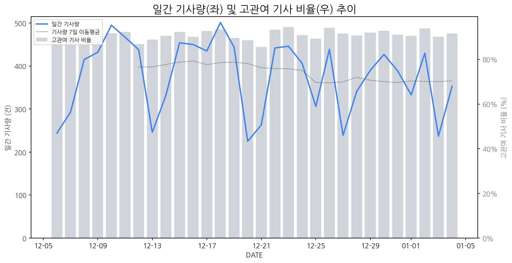

1
시장 활동 지표
기사량 추세 & 이상 징후 탐지
시장의 '전체 기사량'이 평소보다 비정상적으로 급증했는지(Spike)를 차트로 확인하고, LLM이 분석한 급등의 핵심 원인을 파악할 수 있음

고관여 기사란? 산업 연관 키워드로 수집된 기사들 중 디스플레이 키워드에 가중치를 반영하여 도출된 관련성 높은 기사
수집된 기사 수 (2026-01-04)
353
+4% WoW
기사량 변동 수준 (7일 이동평균 대비)
±6.7% 이하
2
오늘의 키워드
급격한 관심 ↑, 주목해야 할 키워드
1
삼성디스플레이
+5.4σ
삼성디스플레이가 CES 2026에서 AI 시대에 걸맞은 OLED 기술을 선보일 예정이라는 소식에 관심이 집중되었습니다.
Related Metrics
금일 언급량: 31, 전일 대비: +31
Interpretation
AI OLED 경쟁력 강화
Next Step
핵심 토픽 'OLED_Topic' 관련 신호입니다. 3번 섹션(키워드 감성분석)에서 해당 토픽의 감성 변동을 교차 확인하세요.
2
oled
+4.4σ
삼성디스플레이, CES 2026서 AI 결합 OLED 신기술 공개 예고.
Related Metrics
금일 언급량: 44, 전일 대비: +42
Interpretation
AI OLED 경쟁력 강화.
Next Step
핵심 토픽 'OLED_Topic' 관련 신호입니다. 3번 섹션(키워드 감성분석)에서 해당 토픽의 감성 변동을 교차 확인하세요.
3
엔비디아
+1.5σ
엔비디아, CES 2026서 차세대 AI칩 공개 및 기업용 AI 시스템 협력 발표.
Related Metrics
금일 언급량: 4, 전일 대비: +4
Interpretation
AI 칩 수요 증가 전망
Next Step
'엔비디아' 관련 상세 기사 및 경쟁사 반응 모니터링
3
실시간 Risk 키워드
경계해야 할 시그널 탐지
특정 토픽의 부정 감성 점수가 급등할 때 이를 즉시 탐지하고, "근거 기사" 링크를 통해 리스크의 실체를 빠르게 파악할 수 있음
키워드 분석 결과, 오늘은 걱정할 만한 하락 신호가 없습니다. (부정 언급량 변화: +1.5σ 이내)
4
주요 이벤트 모니터링
실시간 산업 동향 파악을 위한 주요 활동
최근 발생한 주요 기업들의 신제품 출시, 투자 등 주요 이벤트를 제공하여 매일 경쟁사 동향을 확인할 수 있음
삼성디스플레이는 CES 2026에서 인공지능(AI) 시대에 부합하는 차세대 OLED 기술을 선보일 예정이다. 이는 AI와의 시너지를 극대화하는 디스플레이 솔루션에 초점을 맞출 것으로 보인다.
Impact
AI 기술과의 융합을 강조한 삼성디스플레이의 신기술 공개는 관련 디스플레이 시장의 기술 발전 방향을 제시하고, AI 기반 서비스 확산에 따른 고성능 디스플레이 수요를 견인할 수 있다.
Next Step
AI 연동 강화, 차별화된 화질 및 기능 구현을 통해 경쟁사 대비 기술 우위를 확보하고 새로운 시장 기회를 창출해야 한다.
삼성, SK, LG 등 국내 주요 기업들이 CES 2026에서 '코리아 초격차 AI'를 주제로 최첨단 디스플레이 기술을 선보이며 기술 리더십을 과시할 예정이다. 이는 AI 기술과의 융합을 통해 디스플레이 산업의 미래를 제시하는 중요한 행사이다.
Impact
이번 CES 2026에서 국내 기업들이 AI 기반 디스플레이 기술의 우위를 재확인함에 따라, 글로벌 디스플레이 시장에서 AI 기술 통합의 중요성이 더욱 부각되고 관련 기술 경쟁이 심화될 것이다.
Next Step
AI 기술과의 시너지를 극대화할 수 있는 차세대 디스플레이 솔루션 개발 및 마케팅 전략을 강화하여 시장 선점 효과를 노려야 한다.
삼성전자와 LG전자가 각각 6K 및 5K 해상도의 신규 게이밍 모니터 라인업을 처음으로 공개했습니다. 이는 고해상도 게이밍 시장에서의 경쟁 심화를 예고합니다.
Impact
이번 신제품 출시는 고주사율과 고해상도를 동시에 만족시키는 프리미엄 게이밍 모니터 시장의 성장을 가속화하고, 경쟁사들의 기술 개발 및 제품 출시를 촉진할 것으로 예상됩니다.
Next Step
경쟁사의 프리미엄 게이밍 모니터 기술 동향을 면밀히 분석하고, 자사의 차별화된 기술력과 가격 경쟁력을 확보하여 시장 점유율을 확대할 전략을 수립해야 합니다.
DB하이텍이 차세대 전력반도체 분야에서의 리더십을 부각시키며 주가가 긍정적인 흐름을 보이고 있습니다. 이는 회사의 기술력과 시장 경쟁력을 인정받고 있음을 시사합니다.
Impact
DB하이텍의 전력반도체 경쟁력 강화는 디스플레이 구동에 필수적인 전력 관리 효율성을 높여 고성능, 저전력 디스플레이 제품 개발에 긍정적인 영향을 미칠 수 있습니다.
Next Step
디스플레이 제조 기업은 DB하이텍과 같은 전력반도체 선도 기업과의 협력 강화 및 차세대 전력반도체 기술 동향 주시를 통해 디스플레이 제품의 성능 경쟁력을 확보해야 합니다.
TSMC의 2나노 공정 독주에 균열이 생기면서 삼성전자가 공급망 내 기회를 포착할 가능성이 열렸습니다. 이는 차세대 반도체 기술 경쟁의 새로운 국면을 예고합니다.
Impact
2나노 공정 경쟁 심화는 첨단 디스플레이 패널 제조에 필요한 고성능 반도체 칩의 수급 및 가격 변동에 영향을 미칠 수 있습니다.
Next Step
삼성전자는 2나노 공정 기술 확보 및 관련 공급망 다각화를 통해 차세대 디스플레이 생산 경쟁력을 강화해야 합니다.
5
지금 주목해야 할 뉴스 TOP 3
AI가전 '한·중 대첩', 젠슨 황·리사 수 출격…양자 현실화도 눈길
‘레드테크’(중국 최첨단 기술)의 공습은 더 거세졌고, 먼 미래 기술이라던 양자컴퓨팅은 우리 삶에 성큼 더 다가온 CES 2026의 관전 포인트를 5개 주제로 요약했다.
올해 CES도 화두는 AI… 韓기업 ‘피지컬AI’ 공개
6일(현지 시간) 미국 라스베이거스에서 개막하는 세계 최대 가전·정보기술(IT) 전시회 ‘CES 2026’에서는 인공지능(AI)이 물리적인 현실 세계, 그것도 가정부터 공장까지 실생활과 가장 밀접한 영역에 스며든 가까운 미래를 볼 수 있을 것으로 전망된다.
AI 패권다툼 서막…전운 감도는 美 CES
세계 최대 가전·정보기술(IT) 전시회 ‘CES 2026를 앞두고 ‘AI칩 패권다툼’의 서막을 알릴 것으로 예고된 CES가 ‘AI칩 패권다툼’의 서막을 알릴 것으로 예고된 가운데 중국 TV·가전업체들은 삼성이 빠진 라스베이거스 컨벤션센터에(LVCC) 대규모 부스를 꾸리고, 개막을 앞두고 사방에 대형 현수막을 내걸며 자신들이 주인공임을 자처한 CES 2026에 대한 열기는 인천국제공항에서부터 전해졌다.